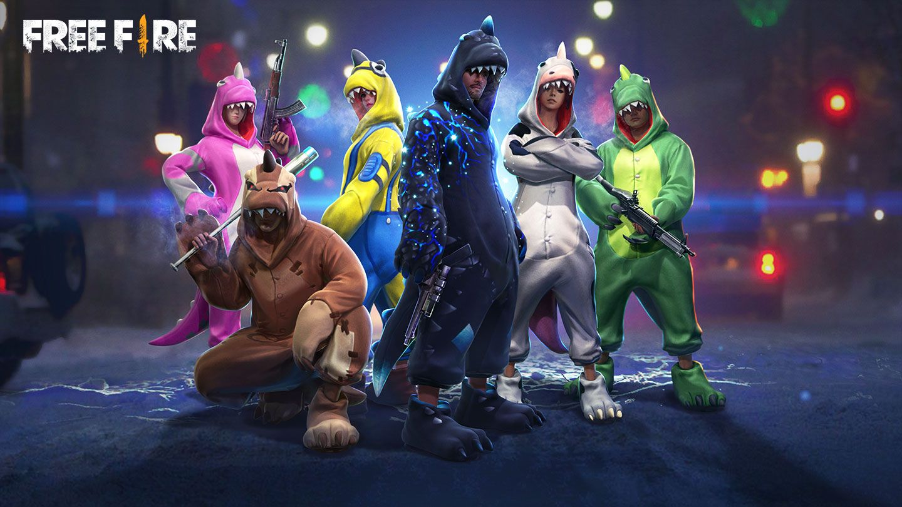
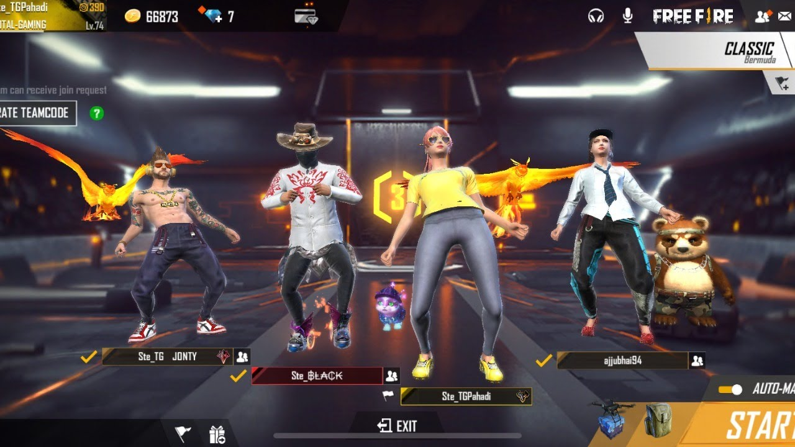
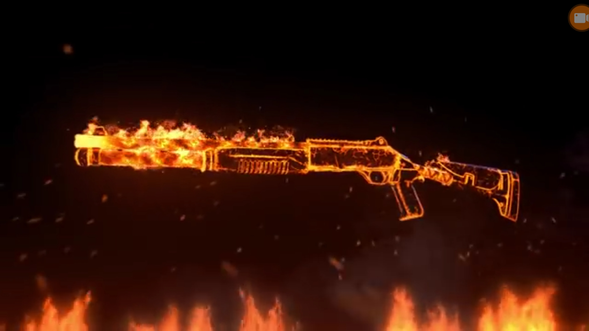
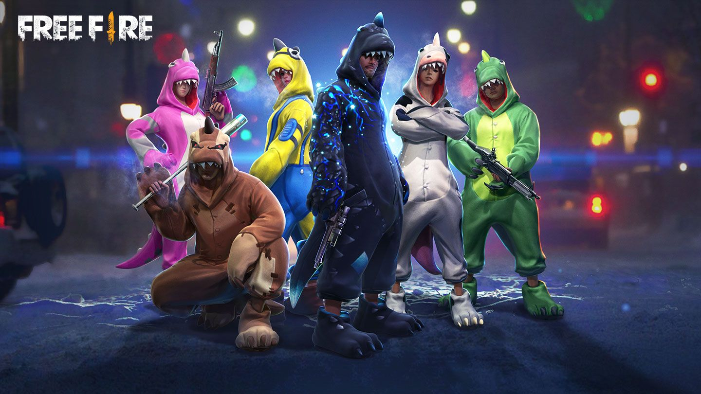
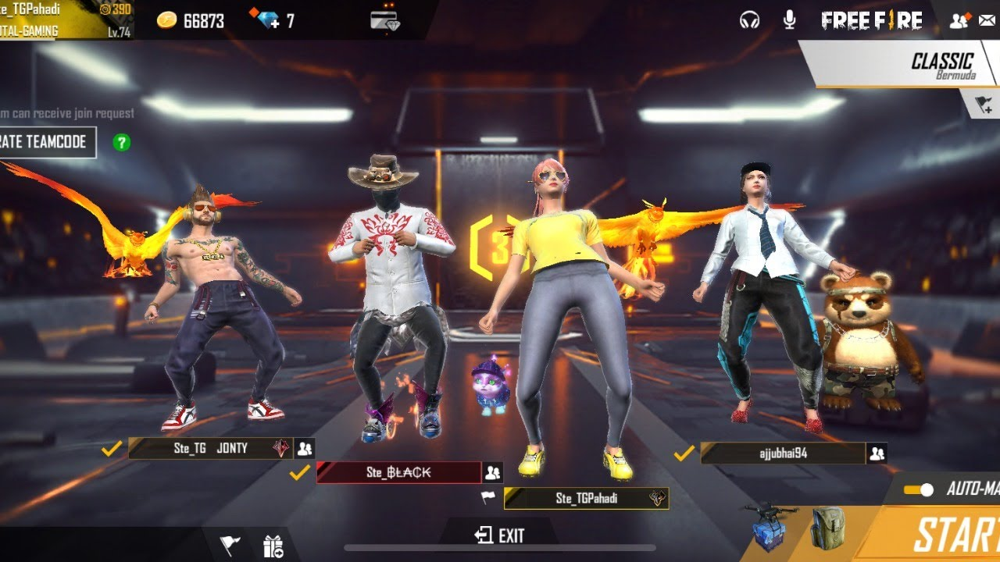
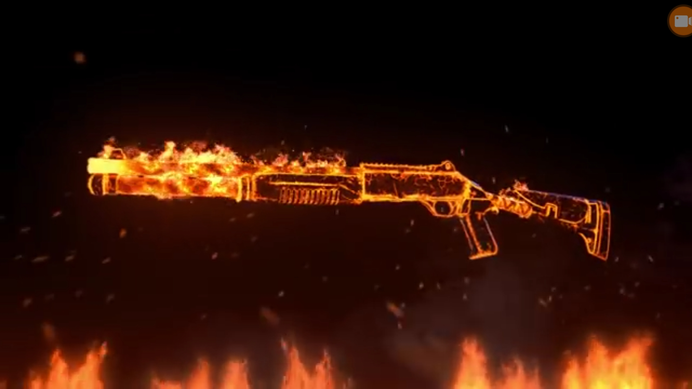

Free fire
Free Fire é um jogo eletrônico mobile de ação-aventura do gênero battle royale, desenvolvido pela desenvolvedora vietnamita 111dots Studio e publicado pela Garena. O jogo obteve um beta aberto em novembro de 2017 e foi lançado oficialmente para Android de iOS em 4 de dezembro de 2017.
O jogo consiste de até no total de cinquenta jogadores que caem de paraquedas em uma ilha em busca de armas e equipamentos a fim de matar os outros jogadores. Os jogadores escolhem à vontade a posição inicial, pegam armas e suprimentos para aumentar o tempo de vida na batalha.
Inspirado em PlayerUnknown’s Battlegrounds (PUBG) – outro jogo do mesmo gênero, Garena Free Fire se tornou um sucesso instantâneo, atingindo, até outubro de 2018, a marca de 7,5 milhões de jogadores (refletidos pela quantidade de downloads) somente em dispositivos Android, tornando-se um dos jogos de Android mais baixados de 2018, batendo grandes títulos (como PUBG Mobile e Clash Royale). Por conta de sua popularidade, o jogo recebeu o prêmio de "Melhor Jogo em Voto Popular" pela Google Play Store em 2018, além das criações de competições profissionais em determinadas partes do Brasil e do mundo.